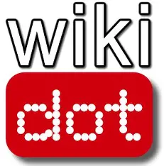

wiki.gg
Wiki.gg differs from platforms like Fandom, Miraheze, and Wikidot by focusing specifically on gaming communities and keeping its pages clean and minimally monetized. Compared to Fandom's ad-heavy, highly branded experience, Wiki.gg offers a simpler, faster interface that many users find easier to navigate. Unlike the customizable, donation-funded Miraheze or the site-building flexibility of Wikidot, Wiki.gg prioritizes performance and consistency for game-focused collaborative projects.
To get started on wiki.gg, you can create an account and either join an existing gaming wiki or submit a request to have a new one created for your project. If you're contributing, begin by reading the community's rules and making small edits—like fixing formatting or adding information—to learn the wiki's style. If you're creating your own wiki, prepare a clear description of the topic and goals so the staff can review your request, then customize templates and pages once it's approved. Unlike some other wiki platforms, wiki.gg keeps its interface clean and ad-light, making it easier for you to focus on editing rather than navigating cluttered layouts.
To get started on wiki.gg, you can create an account and either join an existing gaming wiki or submit a request to have a new one created for your project. If you're contributing, begin by reading the community's rules and making small edits—like fixing formatting or adding information—to learn the wiki's style. If you're creating your own wiki, prepare a clear description of the topic and goals so the staff can review your request, then customize templates and pages once it's approved. Unlike some other wiki platforms, wiki.gg keeps its interface clean and ad-light, making it easier for you to focus on editing rather than navigating cluttered layouts.

fandom.com
Fandom stands out from platforms like Wiki.gg, Miraheze, and Wikidot through its large, centralized network and heavily branded, ad-supported interface. While Wiki.gg emphasizes clean layouts and gaming-focused communities, Fandom uses a universal design that promotes cross-site visibility and engagement. Compared to Miraheze's community-governed approach and Wikidot's site-building flexibility, Fandom offers a more unified but less customizable experience.
To get started on Fandom, create an account and explore existing wikis to find one you'd like to contribute to, then read its rules and editing guidelines. If you're contributing, start with small edits such as correcting grammar, updating facts, or adding images so you can get used to Fandom's tools and style. If you want to create your own wiki, use Fandom's “Create a Wiki” feature, choose a theme, and begin building pages, categories, and templates to establish your community. Compared to many other wiki platforms, Fandom uses a heavily branded, ad-supported interface, which can feel busier but also provides built-in tools that help connect your content to a larger network of fan communities.
To get started on Fandom, create an account and explore existing wikis to find one you'd like to contribute to, then read its rules and editing guidelines. If you're contributing, start with small edits such as correcting grammar, updating facts, or adding images so you can get used to Fandom's tools and style. If you want to create your own wiki, use Fandom's “Create a Wiki” feature, choose a theme, and begin building pages, categories, and templates to establish your community. Compared to many other wiki platforms, Fandom uses a heavily branded, ad-supported interface, which can feel busier but also provides built-in tools that help connect your content to a larger network of fan communities.

miraheze.org
Miraheze differs from platforms like Wiki.gg, Fandom, and Wikidot by being fully non-profit and funded through donations, which keeps its wikis free of ads. Unlike Fandom's heavily branded, standardized layout or Wiki.gg's gaming-focused structure, Miraheze emphasizes user control and deep customization across a wide range of topics. Compared to Wikidot's hybrid wiki-website tools, Miraheze stays closer to classic wiki principles while still offering flexible configuration and community-driven governance.
To get started on Miraheze, create an account and browse existing wikis to find one you want to contribute to, then review its local rules and editing conventions. If you're contributing, begin with small edits—like fixing formatting, adding citations, or updating content—to learn how the community structures its pages. If you want to create your own wiki, submit a request through Miraheze's Wiki Request system and, once approved, customize your site using the platform's wide range of extensions and configuration options. Unlike many ad-supported wiki hosts, Miraheze is fully donation-funded and community-governed, giving you more freedom and control over how your wiki looks and operates.
To get started on Miraheze, create an account and browse existing wikis to find one you want to contribute to, then review its local rules and editing conventions. If you're contributing, begin with small edits—like fixing formatting, adding citations, or updating content—to learn how the community structures its pages. If you want to create your own wiki, submit a request through Miraheze's Wiki Request system and, once approved, customize your site using the platform's wide range of extensions and configuration options. Unlike many ad-supported wiki hosts, Miraheze is fully donation-funded and community-governed, giving you more freedom and control over how your wiki looks and operates.

wikidot.com
Wikidot differs from platforms like Wiki.gg, Fandom, and Miraheze by offering more advanced page-building tools, including modules and scripting features that give it a hybrid wiki-website feel. Unlike Wiki.gg's streamlined gaming focus or Fandom's standardized, ad-supported design, Wikidot lets communities create highly structured or visually customized layouts. Compared to Miraheze's community-governed, traditional wiki approach, Wikidot provides greater flexibility for users who want their wikis to function more like full websites.
To get started on Wikidot, create an account and explore existing sites to find one you'd like to contribute to, then read its guidelines to understand how that community structures its pages. If you're contributing, begin by making small edits or additions so you can get used to Wikidot's unique syntax and modular tools. If you want to create your own wiki, use the “Create a Site” option, choose a theme, and start building pages using Wikidot's templates, modules, and optional scripting features. Unlike many traditional wiki platforms, Wikidot blends wiki editing with website-style customization, giving you more control over layouts and interactive elements.
To get started on Wikidot, create an account and explore existing sites to find one you'd like to contribute to, then read its guidelines to understand how that community structures its pages. If you're contributing, begin by making small edits or additions so you can get used to Wikidot's unique syntax and modular tools. If you want to create your own wiki, use the “Create a Site” option, choose a theme, and start building pages using Wikidot's templates, modules, and optional scripting features. Unlike many traditional wiki platforms, Wikidot blends wiki editing with website-style customization, giving you more control over layouts and interactive elements.